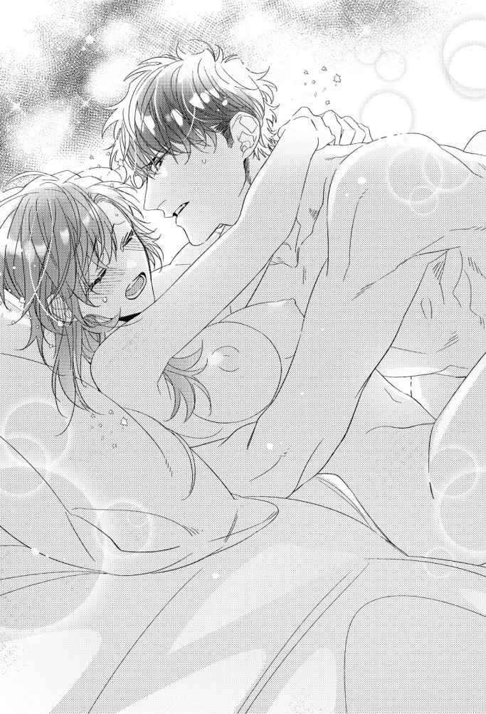

| アフターパンドラ 義兄に捧げる秘めやかな初恋【4】 (チュールキス文庫) | |
| 夜原月見 | |
| 株式会社ジュリアンパブリッシング (2019) | |

この作品はフィクションです。
実際の人物・団体・事件などに一切関係ありません。
窓際に設えられたベッド脇にナイトランプが点されただけの、全体的に黒色のモノトーンで統一された静かなおもむきの八畳間は、元は客間として使われていた洋室だ。
私が子どもの頃は母の同僚や遠方の友人が泊まるのにたまに使われるだけの空き部屋で、女子ども二人住まいの一軒家としては防犯上好ましくない場所だったから、今私がこうして無事でいられるのは十夜の存在によるところが大きい。
――十夜っぽい部屋だな。
十夜の部屋に入ったのはこれが初めてだ。
十夜は身の回りのあれこれを全て自分でやってしまうから、入る必要がなかったのだ。
中学の担任が保証人を申し出てまで世話してやりたくなるくらい、まじめで几帳面な性格も、昔から今も変わっていない。
壁に沿うように置かれた背の高い大容量の本棚は、大学時代から使っている教本とプログラミングやシステム関係の専門書がびっしりと詰め込まれ、その隣の広めのシステムデスクには、その上だけ書類が乱雑に積み上げられていた。そこだけ生活感が残されていたことに、私は少しほっとしたのだけれど......。
――あれは、何だろう。
室内を見渡そうとしていた私の目が、書類の影に隠れるように置かれていた何かでストップした。
目を凝らす。フォトフレームだ。
私は「お邪魔します」と小声で断ってから、おずおずとシステムデスクに近寄った。
木枠のフォトフレームにはめ込まれていた写真に、私は見覚えがあった。
フォトフレームを手に取ってみる。十夜の成人式の時に撮った写真で間違いない。私も同じものを持っていた。
おでんをくれた隣家のおばさんに頼み、この家の門前で撮影してもらった一枚だった。
中学卒業時の居住地で成人式に臨んだ十夜はスーツ姿だ。その左隣では、明るめのグレー基調のツーピースで、親指を立ててドヤ顔をした母が写っている。
母はシャッターの瞬間、「はい！ マル、チーズ！」と掛け声を上げていたはずだ。ほとんどお約束の母の冗談に「撮られる側なのに、ないわ」と若干引き気味の私は、母と十夜を挟み込むようにして右隣に制服姿で立っているが、写真の中の十夜の表情が穏やかに見えるのは、まさかのマルチーズでウケてしまったせいだった。
――懐かしい。
私は写真の時だけ制服を着てその後は家で留守番をしていたが、十夜は成人式に母を招待し、このあと一緒に会場へ向かっている。
ちなみに十夜は実母の写真を持っていない。荒れ果てた生活を送っていた十夜の母は、あの真珠のネックレス以外、息子に何も残さなかったのだ。だから当然のように、幼かった十夜の写真もない。
この写真の中にあるものが、十夜が兄を続けたかった理由だったのだろう。
そう思うと胸が押し潰されたかのような息苦しさを覚えてしまうが、一線を踏み越える決心をしてくれた十夜に、無性に愛しさが込み上げてくる。
「何見てんだよ」
いつの間にか真後ろに立っていた十夜が私の手からフォトフレームを奪い、システムデスクに伏せてしまう。
「ごめんね、勝手に見ちゃって。でもこの写真、私も持ってるものだし。懐かしいなって思って見てただけだよ」
「いいから。この写真のことは忘れろ」
同じ写真を私も持っているというのに、十夜は明らかに動揺していた。
何とも煮え切らない態度で十夜は私から目を逸らすと、フォトフレームを埋めるように書類を被せてしまった。
「冷蔵庫、業者に見てもらわないとわからないけど、たぶん買い換えろって言われる。完全に壊れてる感じだった」
十夜はヘッドボードにあったリモコンを取り上げ、エアコンの温度を高めに設定し直すと、上掛けをめくったままだったベッドに腰をおろした。
「全部脱いで。......見てるから」
悠然とした無表情でそれぞれの膝に肘を突き、軽く組んだ手の甲に顎を乗せた十夜から、射抜くような強い視線が送られる。
「う、うん。わかった」
私は大人しく十夜の前に立った。十夜の気が変わってしまうのが怖い。
無言の十夜の視線が突き刺さるのを意識しながら、私はパジャマのズボンを下げおろし、上着の前ボタンを上から順に外していく。
白い薄地のロングキャミはカップインのノーブラだ。ゆったりとしたサイズのそれは、両の肩紐をずらしただけですとんと足元に落ちてしまう。
夜の静寂が横たわる暗闇で、ナイトランプの明かりに浮かび上がった乳房は病的に白く見えるが、その下にある心臓はバクバクとうるさいくらい鳴っているし、柔らかな膨らみの頂点も触れられるのを待ち焦がれるように硬く立ち上がっていた。
十夜の部屋はキッチンとは比べものにならないほど暖かい。下着一枚になってもほとんど寒気を感じない。
私は一枚だけ残された下着の両脇に指を掛け、片足ずつ抜いていく。前屈みになる格好は、胸の谷間を十夜に強調するようないやらしさがあって、かなり恥ずかしい。
「......脱いだ」
私は伏し目がちに自己申告した。一枚脱ぐごとに羞恥が増してきて、とうとう全裸になった今は十夜の目を直視できない。
「靴下は？」
十夜はこらえきれないようにくすっと笑い、衣類が散らばる私の足元を指差した。
十夜との同居生活は、私にほど良いプレッシャーを与えている。冬でもムダ毛対策しといて良かった、と胸を撫で下ろしている場合ではなかった。
「ごめ......すぐ脱ぐね」
やってしまったー、と内心で頭を抱えたくなりつつも、私は再び前屈みになる。
「靴下くらい、俺が脱がせる」
靴下を目指していた私の腕を十夜が掴み、ぐいと力任せに引っ張った。
バランスを失った裸の体が、どさ、とベッドに放り出される。
「あんたの足、小さ過ぎる。おもちゃみたいだ」
ころんと仰向けに寝転がされた裸体に熱っぽい視線を走らせながら、十夜が私の右足首を持ち上げる。
十夜は靴下を剥ぎ取って、大きな掌に握られた足首に舌を這わせた。
「あ、んっ！」
足首から背筋に電流が駆け抜け、上体を跳ね上げて喘ぎを漏らす。
「意外にいい反応するんだな」
左足の靴下を取りながら、十夜は淡々とした口調でそう言って、私の右の足をふくらはぎから膝裏までゆっくりと舐め上げた。
くすぐったさと気持ちよさが混じり合った疼きが、胸の鼓動を猛スピードで逸らせる。
「あ、あの......。そこはあんまり見ないで欲しいというか......」
右足の踵を十夜の肩に乗せるようにして、大きく割り開かれた両足の付け根に向け、十夜の唇が距離を縮めていく。
これから十夜が何をしようとしているか、知らないわけではない。だけど、自分でも見たことがない秘所を十夜が目にしてがっかりするのは、できれば避けたい。
「見たら駄目ってことか？」
「駄目というか、恥ずかし過ぎる」
かぁっと頬が焼かれたかのように熱を持つ。
真っ赤になってしまっただろう私の顔は十夜から見えているはずなのに、秘所に近い腿 を吸い上げる唇は止まってくれない。
「俺にくれるんだろ、あんたの全部。......隠すな」
ベッドに投げ出されていた左足も肩にかつがれ、浮いた臀部 を両手で持ち上げられる。そうして十夜の眼前に暴かれた秘所に、濡れた舌先がじっとりと這いずった。
私がド忘れした冷蔵庫の中にあったはずのものは、「好きでいるくらい許されるだろうか」と白布に包まれた母に訊いた、純度の高かった頃の私自身だ。
あれから十年が経過している。月日の流れとともに少しずつ冷蔵庫は劣化し、ついに壊れてしまった。私の純真を閉じ込めたままで。
完熟した二十九歳の体に、十九歳の純情は宿っていない。ベッドに組み伏せられた私は浅ましいくらい貪欲に、導かれるまま十夜の体温に狂い始めていた。
「あ......ふ、あ......んんっ」
ぴちゃぴちゃと猥雑 な水音を伴って、十夜の舌が秘所の溝を上下に何度も往復する。
ねっとりと花芽に絡みつく舌先の温度の高さに、十夜の逞 しい腕に抱え上げられた小柄な下肢がなまめかしく揺れ動いた。
――欲張りだな、私。
実は自分がものすごく欲深い人間だったのだと知って、情けない気持ちになってしまう。
十夜との恋を諦めようとしていた今朝までの私は、壊れかけた冷蔵庫にしか存在しない幻だったのだろうか。もはや別人に成り代わろうとしている自分が少し怖い。
「十夜......そこ、ヤ......だめ......」
短く速くなっていく呼吸に私の胸が荒く上下する。私の足の間に顔をうずめていた十夜から、徐々に余裕を失っていく切羽詰まった息遣いが聞こえていた。
「そこって、ここ？」
十夜の舌が、狙い定めたように先端を尖らせ淫芽を弾く。たっぷり濡らされていたそこは充血で膨らみ始め、敏感さを増している。
「っ、......あぁッ！」
体の奥で突発的に膨張した甘い疼きに、足ごと体が鋭く跳ねたが、私の意思とは無関係に反射的に逃げようとする下肢は十夜の腕で拘束されていて、身動きすらままならない。
「......あんたの体、すごく柔らかい」
十夜は低い呟きを零すと、秘裂にじわりと滲み出した愛蜜を啜り上げた。
じゅると水音を立て、ぷっくりと膨らんだ肉芽にしゃぶりつかれた瞬間、十夜に抱えられた下肢が制御を失い、衝動的に大きく反 り返る。
「や、だ......それ、やぁっ......あッ！」
体の芯が崩壊するかのような痺れに抗って、空を掻いてのたうち回ろうとする足首を十夜の大きな手が素早く捕まえる。
普段は寡黙な唇が濡れそぼる秘所をこじ開け、内部への侵入を試みた。
ぴったりと淫唇に合わさった十夜の唇は、熱い。その高い温度でまだ熟れきらない内襞をそそのかすように、舌が蜜口を割ろうとする。
「んく......う、あ......はぁ......」
右足首にあった十夜の手が不意に外され、掴み上げたままだった左足を、膝裏から腿に向けするするとなぞるように撫で上げた。十夜の指先が与える愛撫に、全身がぞくぞくと総毛立つのを止められない。
「あんたの反応が俺の想像通りで、かなりヤバい」
十夜はびくびくと跳ねる私の体を眺めながら短く息を吐き、秘裂まで這わせていた指先をびしょ濡れの蜜口に差し込んだ。
「あ、んッ......っ！」
初めて経験する異物感がもたらす痛みに、私は思わず顔を歪めた。隘路 をまさぐろうとする指先を締め付けてしまったのか、十夜の指が一瞬だけ動きを止める。が、次の瞬間には浅い場所をしつこく撫で回し始めた。
「あ、あっ！ そこ、やぁ、ん！」
長い指先を伝うようにして、体の奥からとろりと蜜が零れ出す。十夜は指にそれを無駄なく絡め取り、媚肉を押し撫でた。
ナイトランプしか光源のない静かな暗闇に、くちゅくちゅと粘度の高い水音が響き渡り、私は羞恥で泣きたくなってくる。ふと気付けば、胸の頂がじんじんと疼いていた。まだそこは触れられてすらいない。にもかかわらず、またしても体は私の意思を裏切って、丸みを帯びた腰が十夜を誘うようにくねり出す。
そのタイミングを見計らったかのように、十夜は私の下肢をシーツへ落とすと、迷いなく胸の膨らみ目がけて手を伸ばしてきた。
「......あんたを頭の中で何度も犯してきた」
朴訥 な声音でぼそっと自白した唇が、硬くそそり立っていた頂をきつく食み上げた。反対の乳房も大きな掌にすっぽり収められ、揉みしだかれながら二十九歳にしては初々しい桃色に色づいた乳首が二指で挟み込んでしごいた。
尖った頂を舌と指のそれぞれでコロコロ転がされ、体の芯までじんじんとした疼きで熱くなってくる。
「このベッドの上で、あんたはいつも嫌がってた。俺は嫌がるあんたを押さえつけて、ボロ雑巾になるまで犯しまくった」
「ぼ、ボロ雑巾......」
さすがにそれはどうなのだろう、と処女なりに考えてみるが、十夜だって普通の男だ。性欲だって人並みにあるのだろうし、十夜の想像の中で、私が何度も彼と交わっていたと知って嬉しいと思う気持ちが先立ってしまうが、
「何しでかすか自分でもわからない。先に言っとくけど、あんまり抵抗しないで欲しい」
警告じみた言葉におののいて、厚い胸板を押しのけるように手を動かしてしまった。
「手、枕の下に入れておいて」
私の警戒心に勘付いたのだろう。十夜は一瞬だけ傷ついたように目を細めたが、ゆっくりと無表情の顔つきに戻って命じた。
「......わかった」
私は仰向 けの体勢で、大人しく枕の下に両手を潜り込ませた。
十夜が無愛想という表情をまとっていたことに、今更ながらようやく気づいた失態に私は目を伏せる。
十夜は昔も今も、たぶんこれからもずっと未来永劫、優等生でい続けるはずだ。誰も落胆させない自分であり続けるために、十夜は努力を惜しまない。
無愛想な表情も努力して手に入れたものなのだ、恐らくは。誰かに傷つけられるようなことがあっても、傷つけ返す事態に陥らないために。
――そういうの、しんどいだろうな。
十夜の生き辛さと不器用さは不憫に類するものだ。
だから私はボロ雑巾だの抵抗禁止だの言われても、あまり怒る気になれない。本音を吐露する勇気をもって妹に手を出す決断をした十夜を、更に愛しく感じてしまう。
そんなわけで、ベッドを抜け出した十夜がクローゼットに置かれた衣類棚の引き出しから避妊具の箱を手に戻って来ても、「他の女の子と使った残りなんだろうな」と思いはしてもほとんど気にならない。残りを使い切ることなく十夜と別れてしまった女の子たちに優越感を覚えてしまうくらいだ。
「寒くないか」
ベッドに片膝だけ乗り上げた格好で、十夜は窓上に設置されたエアコンを見上げながらルームウェアを脱いでいく。
「うん、大丈夫」
と答える私は、ぽいぽいと子どもみたいに脱ぎ散らかしていく十夜の体を正視できず、目のやり場に困ってしまう。
「何で目、逸らしてんだ」
ぎし、とベッドを軋ませながら十夜の体が私に覆いかぶさった。
肌を重ね合わせての詰問に、私は「えっとだってその」としどろもどろに返事をする。顔から火を噴いてしまいそうなくらい、頬が火照ってしまう。
「本当に良かったのか。これが最終確認だ。――あんたは俺とセックスして後悔しないのか」
私の体を割るように両足を抱え上げ、十夜が私を見おろした。ナイトランプの頼りない明かりのせいだろうか、十夜の瞳には不安そうな色が浮かんでいる。
「最終確認？」私は首を傾げた。
十夜は軽く頷く。「理性ぎりぎりの分岐点だ。あんたはまだ俺の妹に戻れる」
私はぶんぶんと首を横に振った。両手を入れた分だけ高さを増した枕に髪がこすれ、さらさらと小さな音を立てた。
「私、十夜の妹でいるって言ったよ。もし十夜が私を抱かなくなっても、ずっと妹でい続け......」
妹でい続けるよ、と言おうとした言葉は、十夜のキスで封じられてしまった。
ほぼ同時に、秘裂にあてがわれた十夜の硬く上向いた下腹が花弁を強引に押し広げた。
「んん......――ぅ、んーッ！」
私をこじ開けようとする大きさに悲鳴を上げるが、しっかり塞がれた口内で反響しただけだった。
意識を丸ごと焼くような強烈な痛みとともに、十夜の先端が隘路の最奥を突き上げる。
「んんっ！ ひ、ぁあっ！」
十夜の唇が私のそれを角度を変えて犯しながら、ゆっくりと引き抜いて素早く叩きつける律動を開始する。
「お、お願い......もっと、ゆっくり......」
処女でもわかる。これはたぶん初心者向きのセックスではない。
容赦ない痛みにさいなまれ、眦 から涙が伝い落ちた。どうにか、手は枕に入れたままでいられた。痛みでとっさに枕の裏側を掴んでしまったからだけれど。
「無理だ」
十夜は再び上体を起こして膝立ちになり、私の腰を両手で掴んで持ち上げた。
熱っぽい十夜の視線が落とされた先にあるのは、長く太い十夜を咥え込んだ蜜口。十夜の片手がそこに伸び、親指の腹で弧を描くように、花芽をくりくりとさすり始めた。
「ん、んンっ！ あ......いや、それ......やめて、そこはダメぇっ！」
唾液と蜜液でぬめる淫芽を執拗に愛撫され、ひくひくとわななく肉襞が十夜の存在感の大きさを感じ取る。
私が体を大きく震わせている間も十夜の律動は止まらない。息を乱しながら、熱杭を私の中に打ち込んでくる。
「......こういう抱き方しかできないから、振られてばっかりだ」
ぎしぎしとベッドが軋む速度を上げる中、端整な顔がそのリズムに合わせるように苦悶 に歪んでいく。
「......か、体目当てだと思われるから？」
涙混じりで問う私の声は、高い喘ぎを上げ続けたせいで早くも嗄 れ始めていた。
「可愛い顔してるくせに、結構はっきり言うんだな。俺でも傷つく」
傷つく、と口で言うわりに、十夜の声音はどこか安心したように嬉しさを帯びていた。けれどその一方で、私を攻める追及の手は緩まない。
十夜から無愛想という表情が完全に剥ぎ取られ、私を求める貪欲さが露出する。
恍惚 とした熱のこもった視線を浴びながら、ふと私は思う。十夜にとってのセックスは、彼の深部にある傷に触れるのを許す行為なのかもしれない。
私を責め立てるのに夢中で、無防備に額に汗を浮かべる十夜が狂おしいほど欲しくなってくる。十夜と繋がっている場所が炎を上げたみたいに熱い。息が上がって苦しい。
私が枕から手を出して十夜の広い背を抱き締めたのと、十夜が私をしっかり抱き締め返したのは、ほぼ同じタイミングだった。
「......朝子。朝子」

二人きりの時に、あんた呼び以外で私を呼ぶ十夜の声は初めて聞いた。天井まで跳ね上がるゴムボールみたいに、心臓が大きく鼓動を打った。
お互いを力いっぱい抱き締め合う中で、何度も繰り返し私の名前を呼ぶ切なげな声音が、愛していると言えない苦しみでもがいているように私の耳には聞こえていた。
妹にまだ戻れる、なんて言いながらも、十夜は私に妹でいて欲しいと思っているのだ。
ずるいな、と思う。
だけど私もずるいから、おあいこだ。
一度でも妹に手を出したからには、もう十夜は他の女を抱かなくなるだろう。
妹でい続ける限り、私は十夜を失わずに済む。
そう思っていた。
翌朝、カーテンの隙間から差し込む明るさに窓の外を見ると、白銀の景色が広がっていた。
眩しさに目を細めてしまうほど、全てが真っ白な世界だった。......私と十夜を除けば、という景色ではあったけれど。
「あんた、すごく甘い」
遅れて目を覚ました十夜が私を後ろから抱き締め、首筋に口付けを落とした。
二人分の体温を蓄えたベッドの中で、私は十夜の熱い腕に溺れそうになる。
今なら私、十夜に溺死してもいい。
身も心も充足し切った証である体の痛みを感じながら、私は海岸に向けて手を振ることもせず、ゆっくりと目を閉じた。
第五章
「朝子先輩。何かいいことでもありました？」
出勤早々、開発部の後輩女子に茶化された。鼻歌をしながら調味料の調合をしていた時だった。
「そんなことないよ」
調味料調合は、開発部員にとって肝となる重要業務の一つだ。
食品製造業における開発部は企画営業部と双璧を成す花形部門だが、その業務内容は恐ろしく地味な単純作業で埋め尽くされている。
例えば、ミリグラム単位の微量な調味料が食材にもたらす舌触りの変化を、誰が見ても一目でわかるように客観的な数値に置き換える作業が代表的なそれにあたる。
長ければ一ケ月以上にも及ぶ単純作業に音を上げる新人も少なくないというのが業界全体の共通認識だが、我が社においては別だ。入社五年以内の一年間研修や、部署間での短期異動制度といったプログラムが豊富に用意されているミスマッチが起こりにくい教育システムは、社員の気分転換にも繋がっており、離職率は業界平均をはるかに下回って推移している。
パートを含めた離職社員の再雇用にも積極的で、年々右肩上がりの女性社員比率の増加は社の特色にもなっている。
となると独身女性社員の負担増加が問題になりがちなのだけれど、そこは残念ながら我が社も例外ではない。
――残業が多いのがちょっと不満だったけど。
私はうまみ調味料の水溶液をスポイトに吸い上げながら、ぼんやりと考える。
――結婚して、妊娠して、休職して。子育てがひと段落したら慣れた職場に復帰できるって、素敵なことだよなぁ。
それについて私は、「独身が損する制度って、微妙すぎ」と不公平に感じる時がままあった。
一生結婚しないと決めていた私は、女性社員比率の維持に貢献はしても、数々の優遇制度利用の機会に恵まれない。毎日が残業状態になる開発ラッシュの時期などは特に、時短勤務の女性社員を羨ましく思ったものだった。
昨夜、私は十夜に抱かれた。抱いてもらった。
だからと言って私は十夜と相変わらず結婚できないし、子どもだって作れない。戸籍上、父を介して血が繋がった兄妹となっている以上、私はやっぱり一生独身を貫くしかない。
――......でも。
妊娠を理由に、朝の通勤ラッシュを遅い時間帯にずらしている退職予定の同僚に、「出産に備えて早めに引き継ぎしてもらっても大丈夫だよ」と素直に言えた自分が少し不思議だった。
些細なことだが、ロッカーに落ちていたゴミを拾って捨て直したり、共同デスクの上に散乱していた書類をきちんと積み直したりといったことまでしてしまった。それらの行為はこれまでもたまにやっていたことではあったが、気付いてもスルーする時のほうが多かった雑務だ。
見える景色が昨日と違っているのも、気のせいなんかじゃない。
粉雪をまき散らす曇天を仰いでは「また雪かきか」と億劫な朝を過ごしていたのに、踏みしめる雪の音が意外に可愛らしかったのに気付いた途端、灰色に埋め尽くされていた世界に雪化粧が施され、白銀に輝く光景に生まれ変わってしまった。
ロッカーで袖を通した白衣の色も、昨日よりくっきりとした白色に見えて新鮮だった。
調合器具を扱う手つきもいつもより丁寧で、いつの間にか鼻歌をしていたものだから、後輩に突っ込まれてしまったというわけである。
――十夜が私を変えたのだ。
十夜に抱かれた私は、純潔を失った。その代わり、感覚が鋭くなった。
十夜に奪ってもらった私の処女は、五感を鈍らせるものだったのかもしれない。でなければ、いきなり視力が良くなったり他人に優しくなったりなんかしない。
出会って恋をして、十五年。賭けに打って出て十年が経過した。
長かった。長過ぎた。十夜と同じ空間で彼が吸っている空気を共有し続けた日々は、溺死寸前にまで私を追い詰めていた。
――それも、昨日で終わった。
今日から私は、私にすら縛られない新しい日々を始めることとなるのだろう。
十夜との今後の生活を考えれば不安が増してしまった状況だけれど、そうして不安を感じられる自分は贅沢な気がして嬉しい気持ちすらある。
恋って、矛盾が成立するからホント不思議。そんなことを考えながら帰宅し、玄関の外に積もった雪を軽く掃除して夕食の準備に取り掛かろうとした時だった。
携帯が軽快な着信音を鳴らす。十夜からのメッセージだった。
――『残業で遅くなる。たぶん終電』
日付を越えないうちに十夜の顔を見たかったのだが、仕事であれば仕方ない。帰り際、駅前の魚屋さんで奮発したマグロの柵を、勝手口の一番寒い場所に置いたクーラーボックスに入れておく。コンクリートの床を外気温が冷やし続ける、天然の冷蔵庫と化した勝手口の一角には、野菜が並べてある。
都会の雪は気まぐれだ。いつ陽気が戻っても困らないように、早めに冷蔵庫を買い換えなければいけないとは思う。けれどもう少しだけ、パールちゃんと一緒に過ごしていたい。パールちゃんを手放してしまったら、今度こそ母が残した全てを失う気がして怖い。
――明日にでも、十夜に相談してみよう。
とりあえず単身者向けのミニ冷蔵庫を買ってくれば当面はしのげるだろう。そんなことを考えながら、私は自室で眠りに就いた。一昨日ぶりのベッドは子ども時代から使っている女の子用の小さめサイズだが、十夜がいないだけで無駄に広く感じられる。もちろん、十夜の匂いもしない。
――十夜に会いたいな。
一緒に暮らして毎日おはようを言ってきた家族なのに、一晩会えないだけで寂しくなってしまう私は、昨日よりうんと欲張りに変わってしまったらしい。そんなふうに純粋に十夜を欲しがれるようになった自分も悪くないと思ってしまうのは、恋の矛盾のせい。
――ホント、矛盾だらけだ......。
波間をたゆたうような浅い眠りに、私の意識はあっという間に飲み込まれてしまった。
＊＊＊
帰宅途中の電車内で、十夜はスマホをじっと眺めていた。
――『残業で遅くなる。たぶん終電』
朝子に予告したメールの通り、帰りは終電になってしまった。が、無理に残業をしなくてもいい日だった。前倒しで仕事を片付けてしまったのは、朝子の顔を見るのが怖かったからだ。
欲望のまま、朝子を抱いてしまった。そこに後悔はない。しかし朝子はどうだったか考えると、絶え間ない波のように不安が押し寄せてくる。
――朝子も後悔していないはずだ。
そう言い聞かせ、スマホをスーツのポケットに押し込んだ。
終電の車内は、停車するたびに座席が埋まってしまう程度の混雑ぶりだ。皆いちように疲れ果てた顔で唇を引き結び、くたびれた人形のように顔を伏せている。手元のスマホをいじっている人もいるが、居眠りをしている人もいる。乗客それぞれ帰る場所が異なるし、年齢も性別も違うが、共通するのは「早く帰りたい」という確固たる意志だろう。
十夜とて帰りたいと強く思っている。その気持ちに偽りはない。
反面では「逃げ出したい」という気持ちも拭えない。
トラウマのせいだ。どうせまた捨てられるという、長い間十夜を蝕んでいる病巣が刺激され、帰路に向かう足を重くさせていた。
昨夜十夜は、朝子の兄でなくなった。兄の資格を失くしたので、そうなった。
同時に朝子も妹をやめている。そうして兄妹をやめてしまった結果、ただの男と女になってしまったが、婚姻関係は結べない。
いわゆる事実婚でも十夜は構わない。近所の過干渉を朝子が気にするなら、引っ越してもいい。会社を辞めて、誰も知らない別の土地で暮らすことも可能だ。
朝子の側にいるためなら、それくらいの覚悟は簡単にできる。
――朝子が嫌でなければ、の話だが......。
電車を降り、改札を通り抜ける。
朝子の反応に過敏になりすぎている自分を、帰宅するまでにどうにかしなければ。そう思うほどに、足首にくくり付けられた重りが増やされたかのように歩くスピードが落ちていく。
雪は降っていないが、凍てつくような寒さの深夜である。ただ呼吸をしているだけなのに白い息が立ち込め、行く手を阻むかのように視界までをも曇らせる。
本心では、早く帰りたいと思っている。一秒でも早く朝子に「ただいま」と言って、そのまま彼女をベッドの中に引きずり込んでしまいたい。
昨日はタガが外れ、乱暴な抱き方しかできなかった。だから今度は、労るように優しく抱きたい。
心の底から本気でそう思っているというのに、帰って朝子の顔を正視することを考えると、脂汗が滲んでくる始末だ。
――これは罰なのだろう。
母が遺していった呪いなのかもしれない。
十夜が母と最期に会ったのは、母が亡くなる半年ほど前のことだった。
ねえ、また一緒に暮らしましょう。十夜が住まうアパートを訪ねてきた母は平身低頭で懇願してきた。
どうせまた捨てるくせに。
乾いた井戸の底から、どろっとした汚水が滲み出てくるような感覚があった。一人暮らしを決めた時、決意を新たにしていた。もう二度と、母に振り回されたりしない。俺は俺の人生をこの手で作っていくことにしたのだから――と。
無言でドアを閉めかけたが、母は涙を零しながら十夜にすがりついてきた。
お母さんね、病気になっちゃったの。死にそうだから入院しなくちゃいけなくなって、お金が足りないのよ。そう言って泣いていた。
得意の嘘泣きだ。もう絶対に騙されてやるものか。辟易しながら、一言だけ口にした。
『俺には関係ない』、と。そしてドアを固く閉ざし、それきりとなった。
半年後、母は死んだ。もちろん十夜のせいではない。内縁の夫とやらがいたので、戻らなくて正解だったはずだ。
それでも、十夜が突き放したあとに母が死んだという事実は覆らない。その事実はまるで喉に引っ掛かった小骨のように、十夜を不快にさせる。何かを飲み込もうとするたびに激痛が走るし、「また痛むはず」と恐れながら別のものを飲み込んでみると、傷をえぐられるような辛さが伴う。
そうして十夜はすっかり、喉に引っ掛かった小骨恐怖症になったわけだが、そんな臆病な自分を柔らかに受け入れてくれたのが朝子だった。
愛人の子との同居生活が突然始まって困惑しただろうに、何くれとなく十夜の世話を焼いてくれる朝子と過ごす時間が一秒増えるごとに、喉の小骨の存在は薄らいでいった。
十夜にとっての家族とは、幸せの象徴のようなものである。もし生まれ変わりなどというものがあったなら、まともな家族の中で産まれたいと幼い頃はよく考えていたほどだ。
朝子のように明るく料理上手な母がいて。真面目で勤勉家な性格をしているくせに、どこか脆 い部分を併せ持つ朝子のような姉がいて。どうでもいい我が儘は得意なのに、ここぞという時に頑張り過ぎてしまう朝子のような妹に頼られる兄になりたいと思っていたのだ。
朝子は十夜にとって、幸せの象徴そのものだ。朝子の恋人として彼女から頼られる男になりたいと意識し始めるのに、時間は掛からなかった。
この手でどうしても、朝子を幸せにしたい。しかし彼女と同じ父を持つ十夜にできることは、現実的には限られている。
こんな自分で朝子は本当に良かったのだろうかと、胸の奥に隠れていた自信のなさがひょっこりと顔を出してきそうで怖くなってくる。――堂々巡りだ。
わん、と通り掛かった家で犬が吠え、我に返る。
駅前通りの方角から救急車のサイレン音が響いていた。けたたましいサイレンはいったん十夜のほうに近づいたが、やがて帰路とは反対側の国道方面に遠ざかってしまった。
――......帰ろう。
意を決し、玄関のポーチに上がる。――と。
ぱっと明るく灯った自動点灯式の照明に、ドアの前に置かれた白い塊が照らされた。
――雪だるま......？
朝子が作ったのだろう。ドアの前にあったのは小さな雪だるまだった。それも、二つ。
作ってからだいぶ時間が経ってしまったのか少し溶けていて、目の部分に埋め込まれていた小石が左右不揃いで垂れ気味になっていた。
お世辞にも芸術的と呼ぶには程遠い、不細工気味の雪だるまである。それでも、一方の雪だるまだけ大きめに作られているのに気付いてしまった瞬間、胸がじんと震えた。
照明が当たりにくい陰に目を凝らすと、雪だるまの腕を作る木の枝が、手を繋ぐようにしっかり重ねられているのが見て取れた。
朝子が好きだ。脈絡もなくそう思った瞬間、さあ、と霧が晴れ上がるような清々しさが胸を駆け抜ける。
――大丈夫だ。
こんな兄でもいいと言ってくれた朝子を大事にしたい。そう思いながら十夜は雪だるまの目を正しい位置に入れ直し、物音を立てないようにして家へと入った。
＊＊＊
肌触りのいい毛布に包まれて、まるで熱帯魚のようにまどろみの淵をたゆたう中、何か夢を見た気がする。
よく覚えていないのは、どんな夢を見ていたか思い出そうとしている最中に「ただいま、朝子」と低い声で起こされたからだった。
「おかえりなさい、十夜」
まだ寝ぼけている意識を徐々に覚醒させるように、私はゆっくり瞼を持ち上げる。
「悪い。起こしたな」
ちゅ、と頬に柔らかなキスが落とされる。東北研修に出る前夜に感じたのと同じ接触だが、当時よりひんやりと冷たい温度をしているのは、しんしんと降り積もる雪のせいだろう。
「ううん、大丈夫。今、何時？」
「終電が終着駅に着いたあたりだな」
やたら情緒的な十夜の返答に、まだ眠りから覚め切らない私はくすっと微笑した。
私が知っている十夜なら腕時計を見た上で正確な時刻を口にする。らしくない返答は、昨日で私たちの関係が変わってしまったからだろうか。
「外、寒かったでしょ」
私は布団から腕を伸ばし、中途半端に宙で止まっていた十夜の手を取った。
「うわ、つめたっ」
一気に目が覚めてしまった。変な声を出した私に向け、十夜は優しそうに目を細めて微笑した。
「あんたが温めてくれるんだろ」
「え？ 私が？」
「駄目か？」
私が握っていた十夜の指がしっとりとした動きで私の掌をくすぐり返す。温かな掌の感度を試すように、氷みたいに冷たい十夜の指が這って行く。落差の激しい温度差に刺激され、背筋がぞくっと疼いた。
「だ、ダメじゃないけど......」
「けど。何？」
十夜の長い指が、私の指の股を意味深な動きで撫で上げる。
昨日の夜、十夜は私を抱きながら何度も手を握ってきた。シーツに縫い留めるような強制的な握り方もあった。小鳥の雛を手にするかのよう慎重なものもあった。
今この瞬間の十夜の手は、そのうちのどれでもない。明らかに焦れた動きは、私の掌を通じて昨日と同じ行為をしたいとねだっている。
「......いいよ。こっちに来て」
十夜側の毛布を少し持ち上げると、待ってましたとばかりに十夜は背広ごとコートを手早く脱いで、ベッドに潜り込んできた。
パジャマ越しに十夜がまとっていた冷気が伝播 して、私は暗闇の中の何かを怖がる子どものように再び身を強張らせるけれど、ぎゅうと強く抱き締められたシャツからじんわりとしたぬくもりを感じ取り、ほっと安堵の息を漏らしてしまう。
「子どもみたいにあったかいんだな、あんたは」
「そんなことないよ。十夜が冷た過ぎるんだよ」
「玄関の雪だるまが可愛かったせいだ」
私を抱き締めていた十夜の片手が私の後ろ頭に這い上がり、お風呂で洗っただけの無防備な髪を、さも愛しそうな手つきで梳き始めた。
真冬の乾燥に晒されて荒れ気味の髪に、櫛 と化した十夜の指が通されるたび、魔法が掛けられたみたいにきしみが消え失せ、なめらかさを増していく。
「雪だるま作ったの、久しぶりで楽しかったよ。十夜も今度一緒に作ろうよ」
「雪合戦ならしてもいい」
「絶対勝てる気がしないんだけど」
くす、と笑うと、つられたように微笑の気配が返された。
「......いや。俺はあんたに、一生勝てないと思う」
「雪合戦で十夜が負けちゃうの？」
「雪合戦でも負けるってこと」
ぬくもりを求めるように私の腰の裏に当てられていた十夜の手がずらされ、私の頤 を優しく掴み上げる。
――キスされる。
とっさに目を閉じるが、まだ瞼が落ち切らないうちに十夜の唇が私に重ねられた。
昨日は性急さばかり目立っていた舌先が、別人のような優しさで私の唇の膨らみをくすぐっていく。
「ふ......ぅ......う、んん......」
ついさっきまで冷たい話題をしていたとは思えない、今にもとろけてしまいそうな十夜の唇に、私はすぐ夢中になる。矢のような速度で暑い疼きが背筋を駆け上がり、甘い声を抑えられない。
昨日より簡単に喘いでしまったことが恥ずかしい。その恥じらいを十夜は当然のように見抜いている。更に煽り立てるように、尖らせた舌先で唇の輪郭をゆっくりとなぞってきた。
「あ、ヤ......くすぐったい」
喘ぎ交りの言葉を刻んだ唇が、今度はちゅっと吸い上げられた。十夜の唇に挟み込まれた私の下唇が、熱っぽい口内でじっとりと舐められる。
今この瞬間刺激されているのは唇だけだ。なのに、むずむずと疼いてきたのは体の奥のほう。十夜の愛撫を受ける唇から、体内を熱するように体温が上がってくる。連動するように、下着で守られた下肢から蜜がとろりと漏れ出し、その感触が私をいっそう辱 める。
「昨日したばっかりなのに、もう欲しいのか？」
意地悪そうに十夜が苦笑する。
違う。昨日したばかりだからこそ私の体は十夜を欲しがっているのだ。たった一日離れただけで、私の体は十夜不足に陥っている。
「......うん。十夜が欲しい」
潔く認めると、ご褒美のように十夜の唇が私のそれを深く塞いでくれた。
口内に差し入れられた舌先が単体の生き物のように蠢いて、これから十夜が私にしようとしている行為の激しさを教え込む。
「んんン......ぅ......ふ......」
角度を変えながらもしっかり唇を塞がれて、息が苦しくなってくる。
そんな酸素が足りない息苦しさは、私の十夜不足と酷似している。だから私は懸命に呼吸をするために、もっともっとと十夜を求めてしまう。まるで溺れかけている人のように、しがみつくみたいに十夜の首に両腕を絡ませた。
「積極的だな。昨日が初めてだったくせに」
唇を合わせたまま十夜が呟いた。低い声はあからさまな欲情のせいか、ハスキー気味に掠れていた。
「これ、積極的なうちに入るの？」
腕を絡ませただけなのに。少し不思議に思っていると、頤にあった十夜の手が下げられ、パジャマの上から私の胸に触れてきた。
「あんたのこれ、さっきからずっと俺に当たってる」
節ばった指が、布越しにもかかわらず私の乳首を的確に摘まみ上げ、きゅっと軽く引っ張った。きゅんとした疼きが体の奥で弾け、私の上肢が鋭く揺れる。
互いの着衣越しでも、十夜に触れられる前から胸の頂が硬くしこっていたのは伝わっていたらしい。十夜の愛撫を待てなかった私を罰するかのように、長い指が乳首をこりこりと弄 んだ。
「あ、んっ！ やぁ、ダメぇ......っ」
パジャマの布地をこすりつけるように頂を捏 ねられ、悪寒に似たぞくぞくとした疼きで肌が粟 立ってくる。ゆっくりと、けれど執拗に頂の敏感さを高めようとする動きからひとまずのがれたくて腰を引くけれど、逃がさないとばかりに逞しい腕が伸びてきて阻止された。
「まだ触ってるだけだろ。――ほら、もっと触ってやるから」
だから逃げるな。甘く囁いた十夜の手が、パジャマのズボンの中に差し込まれた。
ずっと触れ合っていたのが良かったのか、もう十夜の手は冷たくない。その代わり肌の上を走るようなスピードで、下着の中に一気に掌が潜り込んできた。
「ひあぁっ！」
下生えをかいくぐった指先が、蜜を零し始めていた秘所をまさぐり始める。くちゅくちゅと濡れた水音を奏でる十夜の指を介し、私は自分の下着がすっかりびしょ濡れになっていたことを知って、かあっと顔を熱くした。
「あんたのここ、もうトロトロ」
耳穴に直接息を吹き込むように囁かれ、私は首を竦めて抗議する。
「と、十夜ってそういうキャラじゃないよね。なんか、すごくいやらしいんだけど」
「かもな」
あっさり十夜は認めたが、秘所にあてがった指を溝に沿うように前後させる動きは止めてくれない。
くちくち......ぬちゅ、という絶え間ない水音が次第に粘り気を帯びてきて、私の顔がどんどん火照りを増してくる。
「俺が何をしてもあんたは恥ずかしがるだろ。駄目って言いながら、もっとして欲しそうな顔をするのが悪いよな。......もっと恥ずかしい思いをさせてやりたくなってくる」
愛液にまみれた十夜の指が、溝の内側に隠れていた小さな突起を掘り出すように、くるっと素早く弧を描いた。同時に乳首をぎゅっと摘まみ上げられ、私の体がびくんと跳ね上がる。
「やああっ！」
「こうされると、あんたは恥ずかしくなるんだろ？」
私の体にのしかかるように十夜が覆いかぶさり、パジャマを上に押し上げる。
ノーブラだった胸がぷるっと小さく震えて露出した。真上から十夜の視線に晒された両胸は、どちらの頂点も硬くそそり立っている。冬の外気のせいではない。痛いほど注がれる十夜の視線の鋭さを初めて直視したからだった。
――こんな十夜、知らない。
兄としてではなく、男として私を見つめる熱を孕んだ視線も。朴訥なばかりだと思っていた十夜の唇が卑猥な言葉を紡ぐことも。着衣越しに私の太腿に押し付けられた十夜の下肢の硬さも。
妹だった私では知り得なかった十夜を惜しげもなく見せられ、どうしたらいいかわからなくなってくる。
「十五年も同じ家に住んでたのに、あんたがこんないやらしい女だったなんて知らなかった」
十夜も私と同じことを考えていたようだ。その言葉が私を嬉しくもさせるし、一方では恥ずかしくもさせてしまう。
「......もっとよがれ」
唸 るような低い声とともに、指の腹が花芯をくにゅっと押し潰す。唐突にもたらされた強い刺激に、心臓を握り潰されたみたいにどくっと鼓動が大きく脈打った。
浜辺に打ち上げられた魚のように、勢いよく体が跳ね上がる。と、待ち構えていたかのように十夜の唇が私の胸の頂を食み上げた。
「きゃう......っ！」
じゅっじゅっと音を立て、乳首が口内に吸い上げられる。熱っぽく湿る十夜の口内で、ころんと窄んだ乳首を舌先で転がされ、甘い痛みでお腹の奥が疼いてくる。その疼きを慰めるように、十夜の指の腹が花芯をくりくりと擦り上げた。
上肢と下肢それぞれの敏感な肉粒を同時に襲撃され、膝頭を閉じようとするけれど、私の倍くらいありそうな逞しい腕に阻まれて、がくがくと爪先を震わせることしかできない。
「ヤ......ヤだ、それ......急すぎるからぁっ」
まるで雷に打たれたかのような快感に頭のてっぺんから体幹を貫かれ、爪先をぎゅっと強く丸めて耐える。
快感に打ち震えるように足の甲をぶるぶると小刻みに揺らす間も、十夜の動きは止まらない。
左右交互に乳首をしゃぶる中、行儀よく揃えた指が二本、蜜口に挿入された。
ぬぷっと入り込んだ異物感に痛みはない。涙を流すように蜜を垂らしていた内襞に直に触れられ、むしろ気持ちいいとさえ感じてしまう。
――やだ、これ。
産まれつきの内腔が、十夜の指の形状を隅々まで記憶するかのように、みっちりと絞り上げに掛かった。もちろん私の意志とは無関係の締め付けだが、私に跨 る十夜はまんざらでもなさそうだ。
「俺の指がふやけたら、あんたのせいだな」
嘲笑 するように口端を吊り上げ、指を三本に増やしてしまった。
太腿に押し付けられている十夜自身に比べれば圧迫感は少ない。だからと言って何も感じないのとは違う。
性交の律動に似せて、蜜で濡れそぼる肉筒に三本もの指が出し入れを始めると、快感が渦となって私に襲い掛かってきた。
「ああ......や、んっ！」
柔らかな内側を指先でぬるぬると撫で回されるたび、同調するように蜜口がわなないた。
胸の奥が熱い。直接火で炙 られているかのようだ。
初めて与えられようとする感覚に、本能的に抗おうと頭を振ってみるが、ほとんど意味はない。そんな私のか弱さは逆に十夜の嗜虐心を覚醒方向に導いてしまう。
「イきそうなんだろ。もっと良くしてやろうか」
「わ、わかんない。そういうのは......だって私、十夜が初めてだし」
「あー......。そうだよな」
十夜は気が抜けたように小さく溜息を吐くと、蜜洞に指を入れたままで上半身を起こし、私のパジャマのズボンに手を掛けた。
「初めてでごめんね。ちょっとは経験しとけば良かったんだろうけど......」
十夜の気をそいでしまったのだろうか。慌てて言い訳した私に、十夜が眉根を寄せた。
「あんたが他の男に抱かれて経験積むとか、冗談だろ」
そうじゃなくて、と言いながら私の下肢から下着ごとパジャマを脱がせ、十夜はもう一度溜息を吐き出した。
「......あんたの初めてに俺が全部なれるのが、幸せ過ぎて辛いと思っただけだ」
深く濃い溜息だった。私は無意識で胸に手を当てる。
十夜の言う通りだ。人は幸せな時も辛くなるものだったのだ。私の心臓に近い場所にあるだろう気持ちの貯蔵庫みたいな場所が、絞られたかのような切なさに見舞われていた。
十年待って良かったと、私は自分自身の我慢強さに感謝せずにはいられない。
ずっと十夜が好きだった。どうしても十夜でなければならなかった理由を、今更かもしれないけれど、私は初めて気付かされた。
「全部十夜が初めてじゃなきゃイヤだよ」
十夜でなければ嫌だという我が儘を押し通すためだからこそ、私は十年も我慢できたのだろう。
吐息をついてみたら、思いがけず十夜に似た溜息になってしまった。
「朝子」
眩いものでも見るかのように目を眇 めた十夜の顔がゆっくりと私に近づけられた。
またキスされる。期待を込めて私は目を閉じた。
「ん......」
くちゅ、と淫猥 な水音を立て、互いの舌先を絡め合う。
性感帯が舌にあったことも、初めて知ったことの一つだ。
キスがこんなに気持ちいいなんて、私は知らなかった。もちろんそれは、相手が十夜だからこそ。キスをしている間、どきどきと胸の鼓動が強く速くなってしまうのは、十夜が私にとって特別に大切な人だからだ。
唇は食事を摂るための入り口の役目を果たしたり、他人とコミュニケーションを取る時に使うものだと思っていたが、ただ重ねているだけで言葉にできない気持ちを伝え合うことができると、こうして十夜が教えてくれる。
「十夜にね、お願いがあるの」
小さく狭いベッドの中で、隙間なく抱き合う十夜がベルトの金具に手を掛けたあたりで、私はできるだけやんわりとした口調で請う。
「......今日は、その......。できるだけ優しくして欲しいの」
体格差のある十夜の顔に視線を向けようとしたら、思いがけず上目遣いっぽくなってしまった。おねだりするみたいな顔つきは本意ではなかったけれど、体を弄ばれた直後の私の瞳はおあつらえのように涙で濡れていて、十夜には効果的だったようだ。
「わ、わかった。善処する」
十夜は私のパジャマと下着を取り去ると、自身も全部脱いで、私を後ろから抱き締めるような体勢で横になった。
「優しくイかせた経験なんかないから、うまくいかなかったらごめん」
どうやら十夜は、横になった体勢で後ろから私と繋がるつもりでいるらしい。足の付け根の間に、避妊具をまとわせた屹立 が差し込まれる。
「十夜にも初めてがあったんだね」
「あんたにだけは嫌われたくないしな」
十夜の掌に骨盤を支えられながら、びっしょりと濡れた蜜口に硬い先端があてがわれ、滑るようにして奥に向けて押し込まれた。
「あ......あぁ......」
十夜からたっぷり愛撫を受けたばかりの秘所は、さして痛みもなく強直を受け入れた。
――これ、すごくいいかも......。
体位の問題なのだろうか。何度か律動されても、昨日乱暴に犯された深い場所にまで十夜の肉塊は入ってこない。
「あ、あ......んう......」
ゆっくりゆっくり高められる快感に、私の口から漏れる吐息も、溜息の延長のような甘さを伴っている。
「痛くないか？」
は、と短く十夜が溜息を吐いた。少し苦しそうな喘ぎ交じりの溜息がうなじに直接吹き掛けられ、ぞくぞくとした疼きが体の芯から湧き上がってくる。
「うん。すごく気持ちいい」
頷いた私の頬に、十夜がちゅっと音を立てて、何度も繰り返し口付けを落とす。その間に十夜は、骨盤にあった片手を、繋がり合う秘所へと伸ばしてきた。
節張った指先が愛液で濡れた茂みを掻き分け、秘唇に隠れた肉粒を探り当てる。
「あ、ンぅっ！」
予告なく花芯に触れられ、どくっと大きく心臓が跳ねた。
「さっき俺がしたみたいに、胸のほういじってみせろ」
私の耳穴に直接吹き込むように、十夜が命じる。
「え......？ 私がするの？」
「朝子が自分でしてるところ、見てみたい」
もし言う通りにしなかったら......と十夜は言及しないが、花蕾を押し潰しながら屹立をズズ......と入れられれば嫌でもわかる。
私は十夜に従って、両手で自分の乳房を包み込む。まだ十夜の唾液でしっとりとした感触を残すそれぞれの乳首を二指で挟み込み、こりこりと捏ねてみる。
たぶんこれは、自分一人でしたらそれほど気持ち良くないのだろう。
ぎしぎしとベッドを軋ませる十夜の律動。
背後から私の全身を包み込む汗ばんだ体温。
蜜を塗り込むように、すりすりと花蕾をこする卑猥な指先。そして――
「いやらしい朝子も、すごく可愛い」
普段の十夜からは想像もできないくらい、甘過ぎる睦言を囁く唇の存在が、私をどうしようもなく興奮させる。
「俺はもっと激しくいじったつもりだったけど」
意地悪な言葉でせっつかれ、私は頂の先端を糸を捩るように引っ張った。
「ふあ......あ、ああーーっ！」
桃色の頂が十夜の愛撫を思い出し、雷に打たれたような鋭い感覚を再び呼び寄せる。
十夜が抜き差しを繰り返す内壁が、きゅうきゅうとわななき始めるのがわかった。
「......いいよ。イけよ」
鼓膜を震わせた低い声を合図に、私の体は制御できなくなる。
「駄目だ。もう一回、朝子を抱きたい。あんたが足りない」
短く浅い呼吸を繰り返す私を、十夜が組み敷き直した。
......その時だった。
「えっ」
ばき、と大きな音を立て、背を預けていた布団の中央がベッドの底まで沈み込んだ。
「っと。大丈夫か」
バランスを崩して不安定になった私の体をさらうように、十夜が素早く抱き上げる。
「嘘。ベッド、壊れちゃった」
子ども時代から使い続けていた年代物の小さめサイズのベッドは、私一人が使うのであれば何ら問題なかったが、十夜の体重がプラスされた負荷には耐えられなかったらしい。ベッドを降りて敷布団とマットレスを剥いでみると、敷板が真っ二つに折れてしまっていた。
＊
「このサイズが一番無難かなぁ」
冷蔵庫が陳列されたフロアの一角で、私は単色ブラックの二ドア冷蔵庫を指差した。
「あんたが使うものだから、俺はどれでも構わない」
ぽつりと呟いた隣の十夜は、あまり興味がないようだ。どれでも構わないという言葉は、「夕ご飯は何でもいい」と同じくらい言う側にとっては便利なものだけれど、言われたこちらを困らせるものでもある。
「どれでも構わないって言うけど、十夜だって使うものなんだから」
「あー......。じゃあ、この黒いのが一番いいんじゃないか」
「私がこれがいいって言ったから、そう言ってたりするでしょ」
「......」
無言で私から目を逸らした十夜に私は少しむくれてから、側でやり取りを見守っていた店員さんに「じゃあこれでお願いします」と視線を向けた。
冷蔵庫と私のベッドが相次いで壊れた週の土曜日、私は十夜の運転する車で外出した。
私は運転免許を取り損ねてしまったが、十夜は就職前に取っている。車は母が乗っていたものだが、購入して一年経たないうちに亡くなってしまい、名義を変えることで十夜が引き継いでくれていた。
降雪は二日ほど前からぴたりと止んでいる。天気予報によれば降雪のピークは過ぎたらしい。今日みたいな暖かい気温が続いて、一度も降雪を見ないまま春を迎えることになりそうだ、とのことだった。
「じゃあ次はベッドだね」
冷蔵庫の支払いと配送手配を終え、駐車場に向かう通路を十夜と並んで歩く。
雪解けとともに一気に気温が上がった休日の家電量販店は、年末商戦で売り損ねた型落ち家電のセールで賑わっている。はぐれないよう十夜のコートを掴もうとすると、すかさず長い腕が伸びてきて、あっという間に私の腰を引き寄せてしまった。
「と、十夜......？」
あれこれ冷蔵庫を物色したかったので、パールちゃんを購入した近所の量販店ではなく、都心の大型店舗にまで足を運んでいる。ご近所さんや知り合いに遭遇する確率は低そうだが、絶対会わないとは言い切れない。
背が高い十夜は、足も長くルックスが抜群にいい。要するに、十夜は目立つ。千人くらい人を集めて「十夜を探せ」ゲームをしたとしても、数秒以内に発見されて即終了になってしまうはずだ。
――外ではくっついたりしないほうがいいんだろうな。
その分、家ではいちゃいちゃできるようになったわけだし。ここは我慢である。
「大丈夫だよ。あんまり子ども扱いしないで」
私は苦笑しながら、腰にあった十夜の手をやんわりと押しのけて、当初の予定通りコートの袖をそっと掴んでおくのにとどめた。
「え......？ ああ、そうか。悪かった」
切れ長の双眸が困惑したように揺らぐ。
「えっと、ベッドなんだけど。どこに行こうか」
何となく気まずい雰囲気だ。私は話題を振り直す。
「ベッドだけど、実はもう買うのを決めてる」
「え？ もう決めちゃってたの？」
冷蔵庫の名誉挽回とばかりに、十夜が「ああ」とはっきり頷いた。
「あんたに展示品を見てもらうくらいの余地ならある」
つづく
アフターパンドラ 義兄に捧げる秘めやかな初恋【４】
電子第１版発行 ２０１９年１月31 日
著 者 夜原月見
発行所 株式会社ジュリアンパブリッシング
東京都千代田区九段北１‐５‐９‐３Ｆ
０３‐３２６１‐２７３５
(c)TSUKIMI YORUHARA 2019
※本書の一部、あるいは全部を無断で複製転写（コピー）、転載、上演、放送することは法律で認められた場合を除き、著作権の侵害となるため、禁止します。